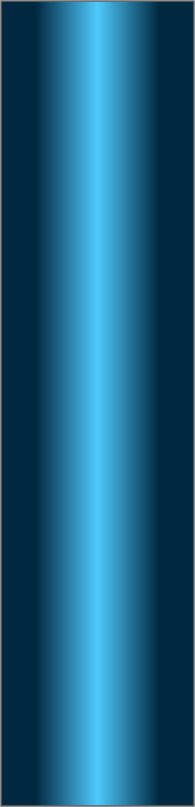
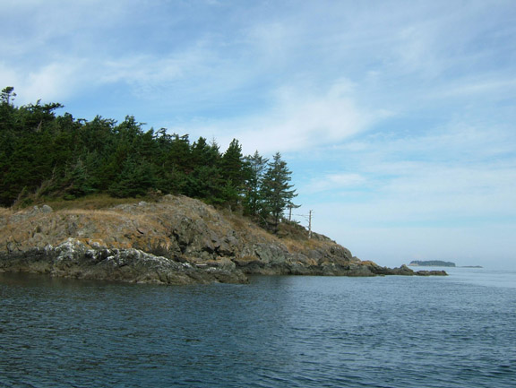
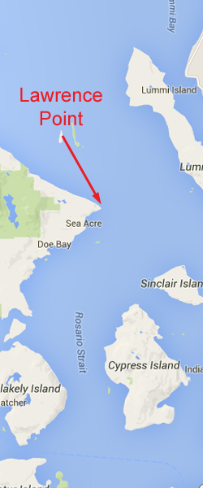
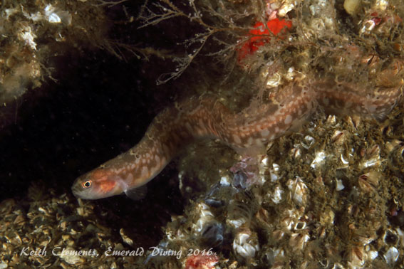

Double click to edit

Lawrence Point
Topography: Extensive rocky structure dominated by vertical walls, sheer faces, boulders, and ledges.
San Juan Islands marine life rating: 5
San Juan Islands structure rating: 4
Diving depth: 80-100 feet.
Highlight: Extensive invertebrate encrusted area. A chance to see perhaps ten species of nudibranchs.
Skill level: Intermediate.
GPS coordinates: N48° 99.721’ W122° 44.559’
Access by boat: Lawrence Point is the name given to the eastern-most tip of Orcas Island. The dive site is immediately northwest of the point and technically located in the Strait of Georgia.
Shore access: None.
Dive profile: I run a live boat at this site as I do with most dives in the San Juan Islands. I enter the water 25-75 yards northwest of the point. A fantastic series of vertical walls, ledges, boulder piles, sheer faces, and protruding formations wait below. This is a great place to explore as visibility is usually 30 feet or more.
I start my dive heading towards the point. The current usually intensifies as I approach the point, so I let my comfort level dictate how far I venture. Intense tide rips often loom off the point - sometimes producing 2-3 foot standing waves. Venturing too far and getting sucked into the rip would be a very poor decision. I double back before I start to feel uneasy with the current and continue exploring the structure to the northwest as long as my air supply permits. The structure to the northwest consists of steeply sloping rock faces marred with crevices and shelves that collect rocks and boulders.
My preferred gas mix: EAN 36
Current observations:
Current Station: Lawrence Point, 1.3 mile east
Noted Slack Corrections: None
I only target flooding tides for this dive. Diving this site on an ebb is a goat rodeo laden with strong currents, inlcuding upwellings and downwellings. Lawrence Point separates two larges bodies of water - the Strait of Georgia and the Rosario Strait. The northwest side of the point is in the lee of the current while the current flows north past the point during a flooding tide. The current along the wall gently back-eddies to the southeast towards the point during the flood. The back-eddy intensifies closer to the point.
I have been on this wall at slack before ebb. Even at "slack" I experience inconsistent and unpredictable current, although not overpowering. I encountered upwelling, waterfalling, and changes in current direction throughout the dive. I much prefer to dive this site on a mild flood when the current along the wall is gentle and consistent.
Hazards:
Current: Strong or unpredictable current on an ebbing tide and at predicted slack. Very strong tide rips east of the point off-slack.
Depth: Much of this expansive dive site consists of sheer walls that drop below safe recreational scuba limits. Good buoyancy and depth management skills are a must.
Boat launches:
Washington Park. Approximately 13 miles from the dive site. This park offers a good boat launch with docks, restroom facilities, and camping. Parking during summer months can be very tight, although some parking is reserved for day use.
Marine life: This site offers diverse marine life and fantastic underwater structure. A large number of nudibranch species roam this site. Giant white dorids are often abundant, as are Hudson, yellow margin, and Nanaimo dorids. I occasionally find large, pale yellow Anisodoris lentiginosa loitering about. White lined dironas, gold dironas, and orange spotted nudibranchs are readily found throughout the site.
Sections of this wall are covered in fringed tube worms and other invertebrates. Colonial tunicates, white sponges, and a number of seastars add color and variety to this amazing seascape.
Fish at this site are generally small. I sometimes find schools of small black rockfish hovering along the kelp-line. Small copper and quillback rockfish take position anywhere the rocky structure offers sanctuary from the current. Puget Sound rockfish and longfin sculpins abound, as they do in many of the San Juan Island dive sites. Most of the lingcod in this area are on the small side, but every so often I’ll run into a 3-4 footer perched on a ledge or boulder. I have had more success finding longfin gunnels at this site than anywhere else in Washington. I have seen at least one longfin gunnel every time I have been here.
A patch of brilliant aggregate green anemones live just below the surf line by one of the large rock outcroppings next to the point. With their bright green disks and pink tentacles, taking in their dazzling color is a great way to end a dive.
San Juan Islands marine life rating: 5
San Juan Islands structure rating: 4
Diving depth: 80-100 feet.
Highlight: Extensive invertebrate encrusted area. A chance to see perhaps ten species of nudibranchs.
Skill level: Intermediate.
GPS coordinates: N48° 99.721’ W122° 44.559’
Access by boat: Lawrence Point is the name given to the eastern-most tip of Orcas Island. The dive site is immediately northwest of the point and technically located in the Strait of Georgia.
Shore access: None.
Dive profile: I run a live boat at this site as I do with most dives in the San Juan Islands. I enter the water 25-75 yards northwest of the point. A fantastic series of vertical walls, ledges, boulder piles, sheer faces, and protruding formations wait below. This is a great place to explore as visibility is usually 30 feet or more.
I start my dive heading towards the point. The current usually intensifies as I approach the point, so I let my comfort level dictate how far I venture. Intense tide rips often loom off the point - sometimes producing 2-3 foot standing waves. Venturing too far and getting sucked into the rip would be a very poor decision. I double back before I start to feel uneasy with the current and continue exploring the structure to the northwest as long as my air supply permits. The structure to the northwest consists of steeply sloping rock faces marred with crevices and shelves that collect rocks and boulders.
My preferred gas mix: EAN 36
Current observations:
Current Station: Lawrence Point, 1.3 mile east
Noted Slack Corrections: None
I only target flooding tides for this dive. Diving this site on an ebb is a goat rodeo laden with strong currents, inlcuding upwellings and downwellings. Lawrence Point separates two larges bodies of water - the Strait of Georgia and the Rosario Strait. The northwest side of the point is in the lee of the current while the current flows north past the point during a flooding tide. The current along the wall gently back-eddies to the southeast towards the point during the flood. The back-eddy intensifies closer to the point.
I have been on this wall at slack before ebb. Even at "slack" I experience inconsistent and unpredictable current, although not overpowering. I encountered upwelling, waterfalling, and changes in current direction throughout the dive. I much prefer to dive this site on a mild flood when the current along the wall is gentle and consistent.
Hazards:
Current: Strong or unpredictable current on an ebbing tide and at predicted slack. Very strong tide rips east of the point off-slack.
Depth: Much of this expansive dive site consists of sheer walls that drop below safe recreational scuba limits. Good buoyancy and depth management skills are a must.
Boat launches:
Washington Park. Approximately 13 miles from the dive site. This park offers a good boat launch with docks, restroom facilities, and camping. Parking during summer months can be very tight, although some parking is reserved for day use.
Marine life: This site offers diverse marine life and fantastic underwater structure. A large number of nudibranch species roam this site. Giant white dorids are often abundant, as are Hudson, yellow margin, and Nanaimo dorids. I occasionally find large, pale yellow Anisodoris lentiginosa loitering about. White lined dironas, gold dironas, and orange spotted nudibranchs are readily found throughout the site.
Sections of this wall are covered in fringed tube worms and other invertebrates. Colonial tunicates, white sponges, and a number of seastars add color and variety to this amazing seascape.
Fish at this site are generally small. I sometimes find schools of small black rockfish hovering along the kelp-line. Small copper and quillback rockfish take position anywhere the rocky structure offers sanctuary from the current. Puget Sound rockfish and longfin sculpins abound, as they do in many of the San Juan Island dive sites. Most of the lingcod in this area are on the small side, but every so often I’ll run into a 3-4 footer perched on a ledge or boulder. I have had more success finding longfin gunnels at this site than anywhere else in Washington. I have seen at least one longfin gunnel every time I have been here.
A patch of brilliant aggregate green anemones live just below the surf line by one of the large rock outcroppings next to the point. With their bright green disks and pink tentacles, taking in their dazzling color is a great way to end a dive.




Longfin Gunnel
Puget Sound Rockfish
Giant White Dorid
Dock Shrimp
Underwater imagery from this site
Aggregate Green Anemone

Hudsons Dorids